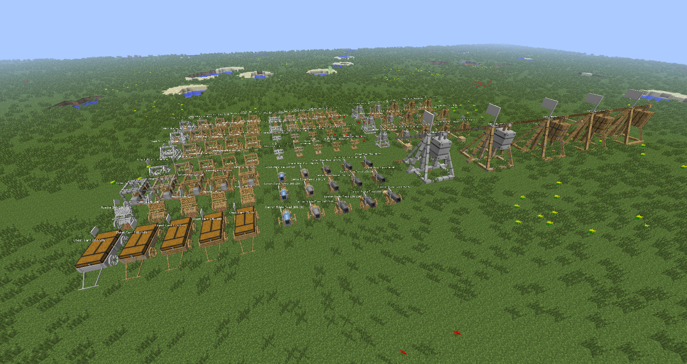
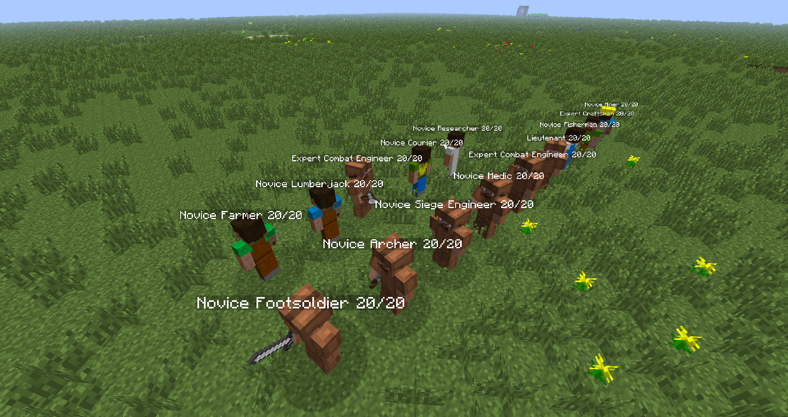

Editor's Note (2023): You are reading an archive from 2014. This wiki concerns the Minecraft mod Ancient Warfare, version 1. Neither this wiki nor this version of the mod are being updated. If you are looking for the sequel, Ancient Warfare 2, visit CurseForge. If you are looking for the indie game series, visit JNI Games. If you are looking for Ancient Warfare the magazine, visit Karwansaray Publishers.
Updated Ancient Warfare Mod (for Minecraft 1.5.2+)
Please check out the Getting Started guide for a basic walk-through of your first steps with Ancient Warfare.
HOW TO HELP
Attention artists:
ShadowMage is currently looking for help with some of the Unit Texturing. While default textures exist for everything, some are "meh" according to ShadowMage and submissions of new designs would be appreciated. For a list of designs that could use new textures, contact ShadowMage on the MC forums @ Shadowmage4513
Gaining editing privileges:
In order to discourage vandalism, this wiki requires you not only register, but have your editing privileges manually assigned. To gain editing privileges, simply send a message to Shadowmage asking for it. While inconvenient, this ensures all information on the wiki is accurate. To message ShadowMage, send a wikispaces message to shadowmage45 or message him on the MC Forums
Every page you add means time ShadowMage doesn't have to waste on maintaining the wiki and can allocate to other things (maybe even updating the mod).
Help is desperately needed in the following categories: * New NPC pages for each civilian class
Wiki update / rewrite
* Example images
Help is greatly appreciated in the following categories:
Translations (ShadowMage has moved over to a system that can accommodate traditional language-files to add new localization)
To view the wiki for the old mod, please navigate to:
The mod is currently in open beta status.
Most current public releases:
AW-1.1.047-beta-MC164
NEI Plugin:
AW-NEI-Plugin-1.1.002-alpha-MC164.zip
Structure Packs:
default_structure_pack1.zip
MOH-AW Structure Pack 1 v1.1.zip
(Structure packs may be placed inside the config/AWConfig/structures/include directory in your minecraft folder)


Please check out the Getting Started guide for a basic walk-through of your first steps with Ancient Warfare.
HOW TO HELP
Attention artists:
ShadowMage is currently looking for help with some of the Unit Texturing. While default textures exist for everything, some are "meh" according to ShadowMage and submissions of new designs would be appreciated. For a list of designs that could use new textures, contact ShadowMage on the MC forums @ Shadowmage4513Gaining editing privileges:
In order to discourage vandalism, this wiki requires you not only register, but have your editing privileges manually assigned. To gain editing privileges, simply send a message to Shadowmage asking for it. While inconvenient, this ensures all information on the wiki is accurate. To message ShadowMage, send a wikispaces message to shadowmage45 or message him on the MC Forums
@ Shadowmage4513 (include your registered user name).Once editing privileges have been granted:
Every page you add means time ShadowMage doesn't have to waste on maintaining the wiki and can allocate to other things (maybe even updating the mod).Help is desperately needed in the following categories:
* New NPC pages for each civilian class
- Wiki update / rewrite
* Example imagesHelp is greatly appreciated in the following categories:
To view the wiki for the old mod, please navigate to:
catapultmod.wikispaces.com